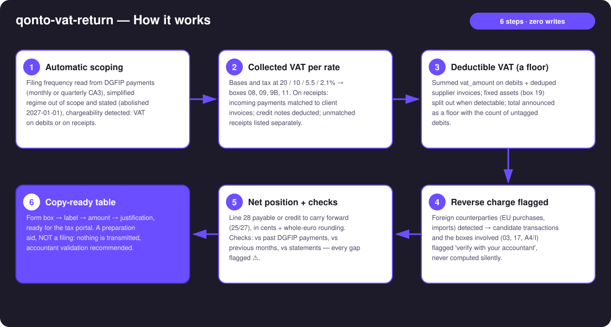
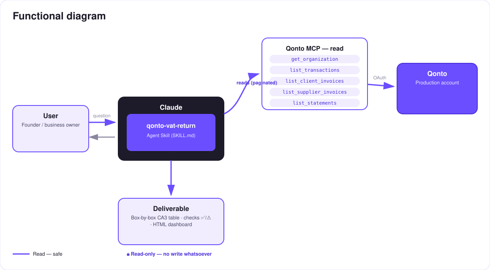

Your French VAT return, box by box, ready to copy — prepared from real Qonto data.
Every month, the same chore: reconstruct collected and deductible VAT, then copy the right amounts into the right boxes on the tax portal. The skill does the preparation work from the Qonto account — a preparation aid, NOT a filing:
Bases and tax at 20 / 10 / 5.5 / 2.1% → boxes 08, 09, 9B, 11 — on debits or on receipts, per the detected chargeability.
Summed vat_amount + supplier invoices, fixed assets (box 19) split out when detectable — floor announced with the count of untagged debits.
Line 28 payable or credit to carry forward (25/27) — cents plus the form's whole-euro rounding.
Vs previous months, vs past DGFIP payments, vs statements — every discrepancy flagged ⚠️ before you copy.
Would someone use this on filing morning? It replaces the spreadsheet ritual entirely.
| Prerequisite | Detail | Required |
|---|---|---|
| Qonto production account | Adapts to any organization — get_organization first, nothing hardcoded | ✅ |
| Country | The CA3 is a French form. Other Qonto countries (DE, ES, IT…): generic VAT summary, never foreign VAT mapped onto French boxes | ℹ️ detected |
| Qonto MCP connected | Official connector (claude.ai / Claude Desktop), OAuth login | ✅ |
| Standard VAT regime (CA3) | The simplified regime (CA12 + instalments) is out of scope — detected, stated, with the 2027-01-01 abolition reminder (art. 38, 2025 Finance Act) | ℹ️ detected |
| Invoices in Qonto | The more client/supplier invoices live in Qonto, the sharper the table; otherwise transactions only, limits stated | ⭕ recommended |
| ≥ 6 months of history | Feeds frequency detection and the checks; below that, honest degradation | ⭕ |

vat_payment_condition: "on_receipts" on client invoices → collected VAT follows the month's received payments, matched to invoices (amount + counterparty + reference) — the case most tools miss; mixed portfolios handled per invoiceemitted_at vs settled_at) · pagination ≤ 50 everywhere · non-French company or empty account: the skill says what it can and can't prepare
Entirely read-only: no write tool, no transmission. The skill prepares, cross-checks and justifies — it cannot file, pay or modify anything. The only action that follows is the user's: copying the boxes into the tax portal, ideally after the accountant's review.
| Box / line | Official label | How the skill fills it |
|---|---|---|
| 01 | Sales and services (taxable base, excl. VAT) | Sum of the period's taxed bases (debits or receipts, per the chargeability) |
| 08 · 09 · 9B · 11 | Base and tax per rate 20 / 5.5 / 10 / 2.1% | VAT breakdown of the invoices (issued, or matched to received payments), credit notes deducted |
| 16 | Total gross VAT due | Sum of the per-rate taxes |
| 03 · 17 · A4/I | Intra-EU acquisitions · imports (reverse charge) | Never computed — candidate transactions flagged "verify with your accountant" |
| 19 | Deductible VAT — fixed assets | Only when detectable (label, supplier description, equipment purchase); otherwise explained |
| 20 | Deductible VAT — other goods & services | vat_amount on debits + supplier invoices, deduped — announced floor |
| 22 | Prior credit carried forward | From the previous CA3 (provided, or inferred 🟡, to confirm) |
| 23 | Total deductible VAT | 19 + 20 + 21 + 22 |
| 25 · 27 (· 26) | VAT credit · credit to carry forward (· refund) | When deductible > collected; the refund stays the user's call with their accountant |
| 28 · 32 | Net VAT due · total payable | When collected > deductible — cents plus the form's whole-euro rounding |
| Check | Against | Output |
|---|---|---|
| This period's net VAT | Median of past DGFIP payments | ⚠️ if deviation > 30% — explained (seasonality? big invoice? missing data?) |
| Bases and rate mix | Previous months / quarters | ⚠️ on mix changes or base jumps |
| Analysed transactions | Statement totals (list_statements) | ⚠️ if the period isn't fully covered |
| Receipts (on_receipts) | Client invoices | Unmatched receipts listed with amounts |
| Untagged debits | — | Count + total → the "floor" disclaimer on deductible VAT |
| Output | Format | When |
|---|---|---|
| Conversation reply | Box-by-box CA3 table (box → label → amount → justification) + checks table ✅/⚠️ | Always — the baseline |
| Interactive dashboard | HTML file/artifact: form-like view, per-rate split, history vs DGFIP payments | When the host renders files (claude.ai artifacts, Claude Desktop, Claude Code); automatic fallback to tables |
| Nothing else | No transmission, no Qonto write | Never — by design |
The ≤ 3-minute demo attached to the PR walks through: the monthly chore → regime detection (cash-basis!) → the box-by-box table → the net VAT matching the accountant's manual calculation to the cent → consistency checks + dashboard. It runs live on a real production account.
| Idea | Effort | Note |
|---|---|---|
Receipt pre-check: list_transaction_attachments on deducted debits, missing receipts flagged | Low | A stronger audit trail |
Chains with qonto-tax-pilot: the prepared CA3 feeds the tax-vault provision | Low | Both skills share the same chargeability detection |
| Draft email to the accountant (mail MCP detected dynamically) | Low | Optional multi-MCP — the core stays 100% Qonto |
| European VAT modules (DE USt-VA, ES modelo 303, IT LIPE…) | Medium | Qonto is pan-European; same engine, different box mapping |